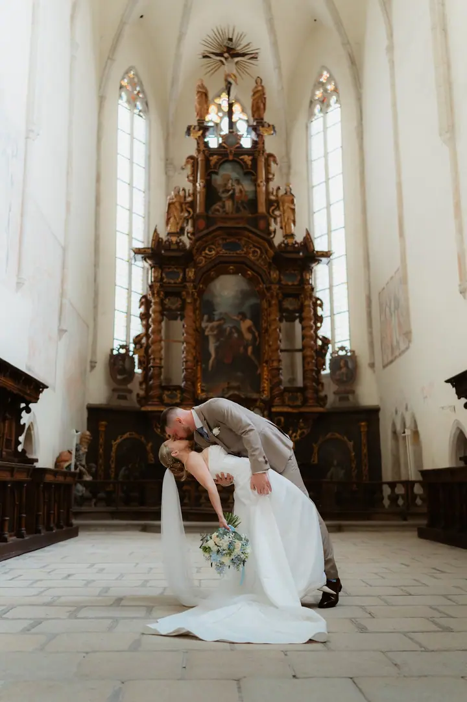
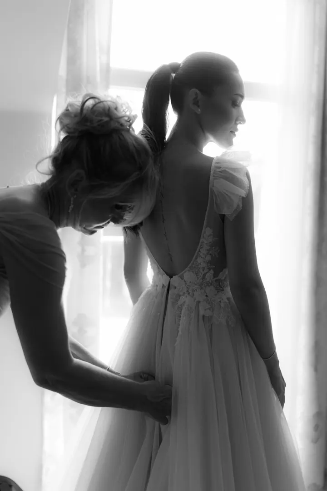
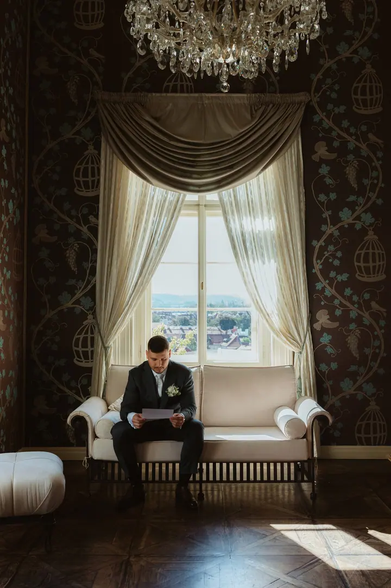
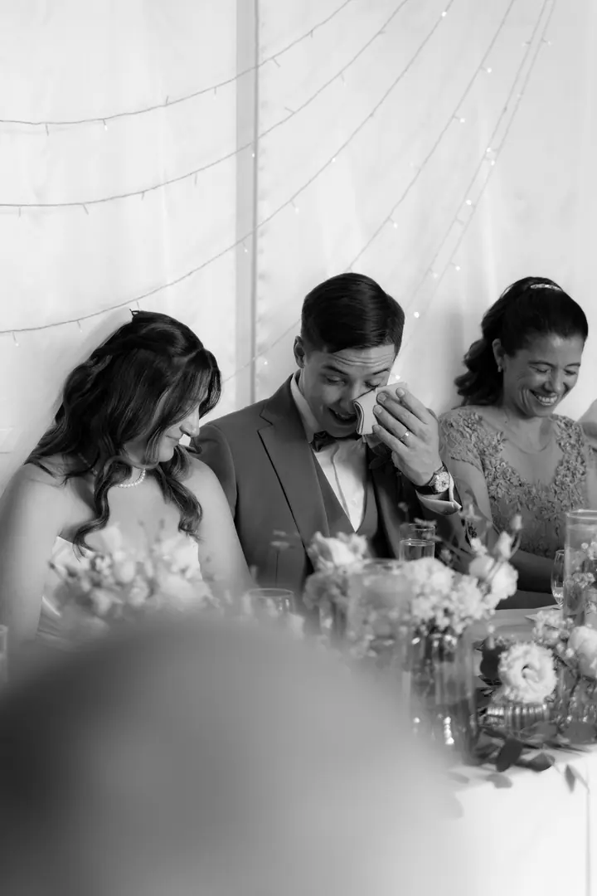
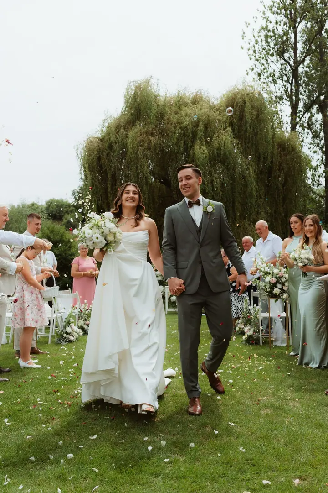
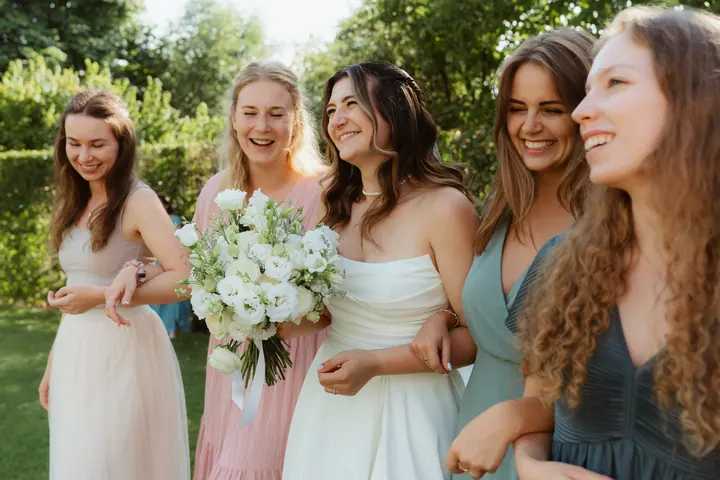

Svatební focení
Fotím tak, abyste na snímcích byli opravdu vy, a hledám momenty, které jsou upřímné a opravdové. Každá svatba je jiná, proto cenový balíček přizpůsobím vašim plánům a přáním.





Jmenuji se Linda Šittnerová a jsem rodinná a svatební fotografka z Prahy. Mám ráda přirozenost a hledám momenty, které jsou upřímné, ale vím, kdy je potřeba zasáhnout a navodit tu správnou atmosféru.
Více o mně
„Fotím tak, abyste na snímcích byli opravdu vy.“
— Linda Šittnerová
Fotím tak, abyste na snímcích byli opravdu vy, a hledám momenty, které jsou upřímné a opravdové. Každá svatba je jiná, proto cenový balíček přizpůsobím vašim plánům a přáním.
Chci zachytit opravdové momenty vaší rodiny tak, aby z nich byla cítit láska, blízkost a radost z obyčejných společných chvílí.
Těhotenství, první dny s miminkem, malé ručičky. Fotím v ateliéru v Líbeznicích nebo ve Strašnicích podle toho, jakou máte představu.
Focení ve dvou, při kterém se máte cítit uvolněně a sami sebou. Když je potřeba, nasměruju vás tak, aby focení bylo příjemné a zábavné.
Fotografie pro mě nejsou jen obrázky. Jsou to vzpomínky, které se nikdy nevrátí. Proto se při focení soustředím na skutečné momenty, emoce a spojení mezi lidmi, na ty malé chvíle, které tvoří váš rodinný a životní příběh.
Chci, abyste se při focení cítili uvolněně a sami sebou. Nechávám věci plynout přirozeně, a když je potřeba, nasměruju vás tak, aby focení bylo příjemné a zábavné. Díky tomu fotky působí přirozeně a jste na nich opravdu vy.
Fotím svatby, rodiny, páry, těhotenství i novorozence. Venku, na místě vaší svatby, nebo v ateliéru v Líbeznicích či ve Strašnicích. Před focením se vždy zeptám na vaši představu a společně vybereme prostor, který k vám bude sedět.
Vyplníte formulář s termínem, místem a představou o focení. U svatby vám ráda pošlu ceník a balíček přizpůsobím vašim plánům.
Zeptám se, jak si focení představujete, a u ateliérového focení společně vybereme ten nejlepší prostor.
Fotíme uvolněně a přirozeně. Když je potřeba, nasměruju vás, aby to bylo příjemné a zábavné.
Do 7 dnů vám pošlu náhledovou galerii k výběru. Finální fotografie dostanete do 3–4 týdnů od výběru v galerii chráněné heslem.
Každá svatba je jiná, proto nabízím cenové balíčky, které lze přizpůsobit vašim plánům a přáním. Vyplňte formulář a ceník vám ráda pošlu.
Fotím po Praze i mimo ni. Po Praze se cestovné nehradí, při focení nad 30 km od Líbeznic počítám 13 Kč za km tam i zpět. Pro ateliér ráda využívám Líbezné fotostudio v Líbeznicích a Factory Photo Studio nebo Fotogram ve Strašnicích, pronájem ateliéru se přičítá k ceně.
Náhledovou galerii posílám do 7 dnů ode dne focení. Finální fotografie dodám do 3–4 týdnů od chvíle, kdy mi pošlete svůj výběr.
Z focení udělám předvýběr a pošlu ho ve webové galerii, kde si vyberete fotky k finální úpravě. Hotové fotografie si pak stáhnete v plném rozlišení z galerie chráněné heslem a můžete je rovnou poslat na tisk.